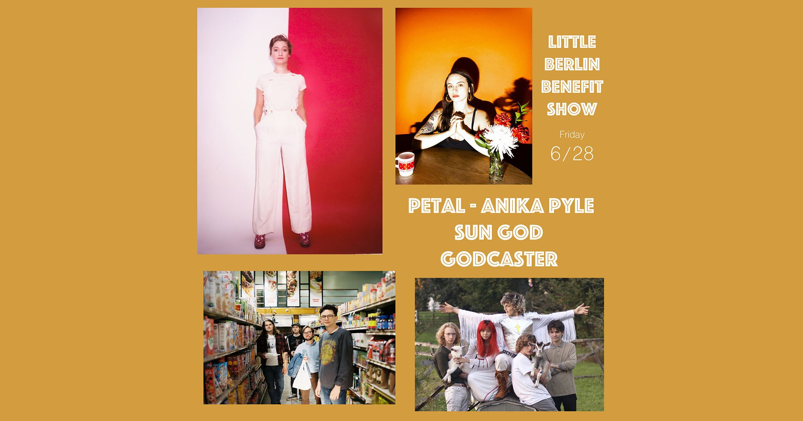

LITTLE BERLIN BENEFIT SHOW
June 2019
Friday, June 28, 2019
Join us on Friday 6/28 for an amazing night of Philly-based music at Little Berlin. “Doors” are at 6:30 in Little Berlin’s courtyard, music at 7. The proceeds of this show will aid Little Berlin in continuing to offer a diverse scope of exhibitions, programming and community outreach in our main gallery and annex space in the Kensington neighborhood of Philadelphia. Founded in 2007, Little Berlin is an undefined exhibition space which is entirely member-driven. Our aim is to promote artists and ideas beyond the individual practices of our membership.
- GODCASTER
- SUN GOD
- ANIKA PYLE
- PETAL
Tickets are $20 and can be purchased via Venmo (@LittleBerlin) or at the door!
